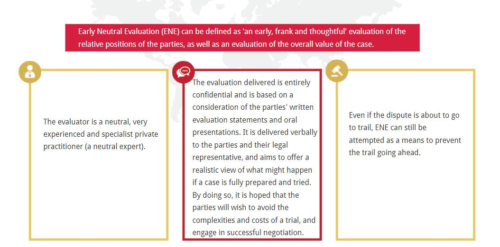
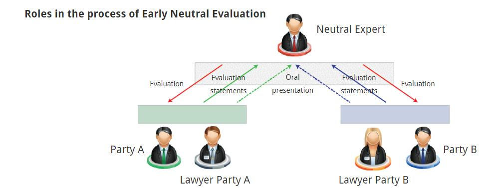

Early Neutral Evaluation (早期中立评估)
Questions: select the answer you consider to be correct.
Q1:Which of the following is a core purpose of an ENE? (以下哪一项是早期中立评估(ENE)的核心目的?)
(1)To identify the legal and evidentiary centre of the case. 确定案件的法律中心和证据中心
(2)To develop a reliable evaluation of the merits of the case. 对案件的法律理据作出可靠的评价
(3)To craft an efficient plan for developing the information about what a litigated outcome would most likely be. 制定一个有效的计划，以获取有关最有可能的诉讼结果的信息。
(4)All of these. 所有这些
A1: the correct answer is ‘All of these’.
The core purposes of an ENE are to (1) identify the legal and evidentiary centre of the case, (2) develop as reliable an evaluation of the merits as the circumstances permit, and, when needed, (3) craft an efficient plan for developing the information [ ... ] about what a litigated outcome would most likely be.
Q2: which of the following statements is characteristic of an ENE? 下列哪一项陈述是早期中立评估的特征?
(1)Sessions normally last several days. (会议通常持续数天)
(2)The evaluator meets with each party separately and privately. (评估人员单独和每一方私下会面。)
(3)The evaluator identifies the issues on which the parties agree and also identifies the important issues in dispute. (评估者确定双方同意的问题，并确定争议的重要问题。)
(4)All of these. (所有这些)
A2:the correct answer is ‘The evaluator identifies the issues on which the parties agree and also identifies the important issues in dispute.’
(Every party is present for the substantive presentations and every party hears the evaluator’s questions and the answers that are given. Sessions normally last approximately two hours, during which time the evaluator identifies the issues on which the parties agree and also identifies the important issues in dispute.) (各方均出席实质性陈述，并听取评估员提出的问题和给出的答案。会议通常持续约两个小时，在此期间，评估员确定双方同意的问题，并确定争议的重要问题。)
Q3:Why was ENE developed?
(1)To save time and money by limiting the scope of the dispute. 通过限制争议范围来节省时间和金钱
(2)To enhance prospects of a successful negotiation by offering a realistic view of what might happen at trial. 对审判中可能发生的情况提出现实的看法，提高谈判成功的可能性。
(3)To serve as both an early planning and settlement device. 作为早期规划和安置工具
(4)All of these. 所有这些
A3: the correct answer is ‘All of these’.
(The Court had become ‘convinced that the place where the most time and money could be saved was in the formative stages of litigation since an infusion of intellectual discipline, common sense, and more direct communication would have the most beneficial effects’ in limiting the scope of the dispute. As a result of the Court’s efforts, the practice of Early Neutral Evaluation (ENE) was developed.) ((法院已经确信，在诉讼的形成阶段可以节省最多的时间和金钱，因为在限制争议范围方面，注入知识纪律、常识和更直接的沟通将产生最有利的效果。由于法院的努力，早期中立评估的做法得以发展。)
Congratulations!
You have completed our view about the Early Neutral Evaluation mechanism.
We have looked at the following key areas:
[1]ENE was developed in 1980s, as a result of the US District Court for the Northern District of California’s efforts. 早期中立评估是在20世纪80年代发展起来的，是美国加州北区地区法院努力的结果。
[2]ENE can be defined as ‘an early, frank and thoughtful’ evaluation of the relative positions of the parties in dispute, as well as an evaluation of the overall value of the case. 早期中立评估可以定义为对争议各方相对立场的“早期、坦率和深思熟虑的”评估，以及对案件整体价值的评估。
[3]The evaluation delivered is entirely confidential and is based on a reaction to the parties’ written evaluation statements and oral presentations. 所提供的评估是完全保密的，并基于对双方书面评估声明和口头陈述的反应。
[4]The core purposes of an ENE are to: (1) identify the legal and evidentiary centre of the case确定案件的法律中心和证据中心 (2) develop as reliable an evaluation of the merits as the circumstances permit, and, when needed 对案件的法律理据作出可靠的评价, 在情况允许的情况下，以及在需要的情况下 (3) produce an efficient plan for developing the information about what a litigated outcome would most likely be. 制定一个有效的计划，以获取有关最有可能的诉讼结果的信息。
What is the aim of this module?
To help you to understand how the process of Early Neutral Evaluation works and what the outcomes of this mechanism are. (理解早期中立评估的过程是如何工作的，以及这种机制的结果是什么。)
In the early 1980s, the US District Court for the Northern District of California became concerned about improving its attorneys’ pre-trial practices and case management. (20世纪80年代初，美国加州北区地方法院开始关注改善其律师的预审实践和案件管理)
The Court argued that it was at the formative stages of litigation where the most time and money could be saved, and that more direct communication would have the most beneficial effects in limiting the scope of many disputes. (法院认为，在诉讼的形成阶段可以节省最多的时间和金钱, 更直接的沟通对于许多争议限制的范围具有最有益的效果。)
As a result of the Court’s efforts, the practice of Early Neutral Evaluation (ENE) was developed. (由于法院的努力，早期中立评估（ENE）实践得以发展。)
Early Neutral Evaluation (ENE) can be defined as ‘an early, frank and thoughtful’ evaluation of the relative positions of the parties, as well as an evaluation of the overall value of the case. (早期中立评估(ENE)可以定义为对当事人的相对立场进行“早期、坦率和深思熟虑的”评估，以及对案件整体价值的评估。)
The evaluator is a neutral, very experienced and specialist private practitioner (a neutral expert). (评估员是一位中立、经验丰富的专业私人执业者（中立专家）)
The evaluation delivered is entirely confidential and is based on a consideration of the parties’ written evaluation statements and oral presentations. It is delivered verbally to the parties and their legal representative, and aims to offer a realistic view of what might happen if a case is fully prepared and tried. By doing so, it is hoped that the parties will wish to avoid the complexities and costs of a trial, and engage in successful negotiation. (所提供的评估是完全保密的，并基于对双方书面评估声明和口头陈述的考虑。它以口头形式送达当事人及其法律代表，目的是对充分准备和审判案件可能发生的情况提出现实的看法。通过这样做，希望当事各方希望避免审判的复杂性和费用，并进行成功的谈判。)
Even if the dispute is about to go to trial, ENE can still be attempted as a means to prevent the trail going ahead. (即使争端即将进入审判阶段，ENE仍然可以作为阻止审判进行的一种手段)
Confidential meetings机密会议
In an ENE, disputing parties meet confidentially with a neutral expert to identify the issues in a dispute, assess the merits of the claims, and explore any options for settlement of the dispute. Sessions normally last around two hours. The evaluator identifies the issues on which the parties agree and also identifies the issues in dispute. (在调解中，争议各方与中立专家秘密会面，以确定争议中的问题，评估索赔的法律理据，并探讨解决争议的任何选择。会议通常持续两个小时左右。评估者确定双方同意的问题，也确定争议的问题。)
Core purposes核心目的
The core purposes of an ENE are to: (早期中立评估)
[1]Identify the legal and evidence bases of the case. (确定案件的法律和证据基础)
[2]Develop as reliable an evaluation of the case as the circumstances permit. (在情况允许的情况下，对案件进行尽可能可靠的评估。)
[3]Produce a plan for devising what a litigated outcome would most likely be. (制定一个计划，设想最有可能出现的诉讼结果。)
Communication沟通
All participants have access to the information and communications that the neutral expert receives before he or she prepares the evaluation, to any questions they have asked and answers they have received, and every part is present for substantive presentations. (所有参与者都可以使用中立专家在准备评估之前收到的信息和沟通，以及他们提出的任何问题和收到的答案，并且每个部分都出席了实质性的介绍。)
Patent Litigation专利诉讼
It is thought that ENE has had a significant impact upon cases involving patent litigation and that, by involving a neutral third party, it serves as both an early planning and settlement device. (人们认为，ENE对涉及专利诉讼的案件产生了重大影响, 而且，通过一个中立的第三方参与，它既是一种早期规划，也是解决手段)
Roles in the process of Early Neutral Evaluation (早期中立评估过程中的角色)
In an ENE, disputing parties have a ‘confidential meeting with a neutral expert to identify the issues in a dispute, explore options, and assess the merits of the claims’. (在调解中，争议各方“与中立专家举行保密会议，以确定争议中的问题，探讨各种选择，并评估索赔的是非对错”。)
Sessions normally last approximately two hours, during which the evaluator identifies the issues on which the parties agree and also identifies the important issues in dispute. (会议通常持续大约两个小时，在此期间评估员确定双方同意的问题，并确定有争议的重要问题。)